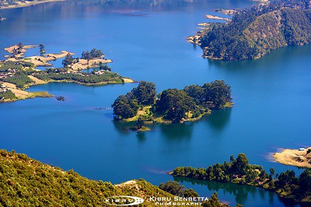

Places I Visited Before

-
Friendship Park has a good view, especially at night. It is known for people who like to walk, take pictures, and have fun. There is also a food service available, although it can be a little expensive compared to the service they provide.
-
Address: 2QF5+C9, Addis Ababa

-
Debre Libanos is an Ethiopian Orthodox Tewahedo monastery located northwest of Addis Ababa in the North Shewa Zone of the Oromia Region. It was founded in 1284 by Saint Tekle Haymanot as Debre Atsbo and was renamed Debre Libanos in the 15th century.
-
Address: PR6X+Q2J, Bolo
Places I Plan to Visit in the Near Future
-
Lalibela is known for its monolithic rock-hewn churches built by the best-known Zagwe emperor in the 13th century. The Zagwe capital was later renamed Lalibelain his honor. The churches are a UNESCO World Heritage site and are still used for worship by Ethiopian Christians today.
-
Address: F4H9+X2 Lalibela, Ethiopia

-
The Danakil Depression is one of the hottest places on Earth and is home to an otherworldly landscape of salt flats, sulfur springs, and active volcanoes. It is a challenging but rewarding destination for adventurous travelers.
-
Address: 7VJ3+JX Dallol, Ethiopia